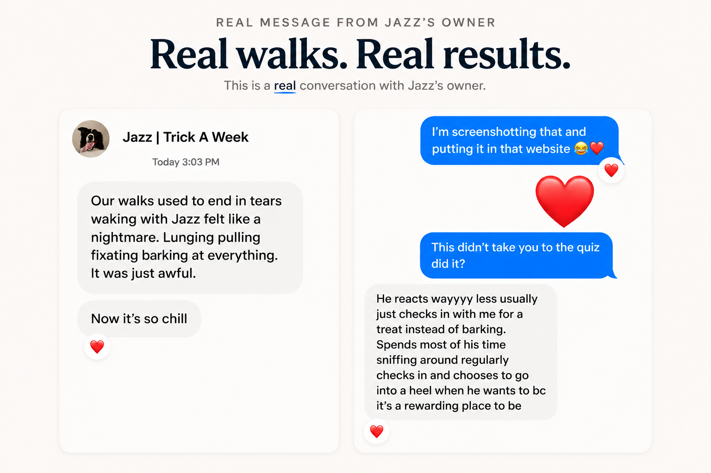

Step-by-step lessons
Know what to do next instead of bouncing between random training advice.
Affordable training education
Digital Dog School is the affordable way to get Joel's real training system without paying private-training prices.
Built from difficult real-life dogs and simplified for real owners, DDS gives you the foundation, clarity, and order most random training advice skips, including The Trust to Train Relationship Reset.
$147 lifetime access · 7-day guarantee · private group support included The Trust to Train Relationship Reset
The Trust to Train Relationship Reset
Digital Dog School
Built from difficult dogs. Simplified for real owners.Puppy foundationsMannersConfidence
PullingBarkingRecall
Better communicationMore freedomCalm in real life
Your dog does not have to be "bad" to need training. Training is how you build communication, confidence, freedom, safety, and a better life together.
DDS is for new dogs, puppies, mostly-good dogs who need more structure, and dogs with real problems. It gives you the education most owners wish they had before the problems got loud.
This is about more than fixing problems. It is how walks get easier, guests stop feeling like a crisis, recall becomes possible, your dog learns how to settle, and normal life stops feeling like a test you might fail.
Watch before you join
If you are wondering whether DDS is enough help for your dog, watch this first.
See the system before you join.
Why this exists
Most dog training content gives you one move for one moment. Teach this cue. Try that tool. Reward this. Correct that. It can all sound reasonable and still leave you lost.
The Trust to Train Relationship Reset gives you the order of operations behind the work: understand how your dog learns, prevent bad patterns, build reward and trust, train useful skills, then bring those skills back into real life.
The better path
Instead of guessing your way through every problem, you learn how to build clarity, confidence, communication, and trust in the order your dog can actually use.
That is how training turns into more freedom: easier walks, calmer guests, better play, stronger recall, and a dog who understands how to live with you.
What you get
Know what to do next instead of bouncing between random training advice.
Stop guessing in hard moments and prevent small issues from becoming daily battles.
Ask questions when you are stuck, share wins, and get help applying the work to your dog.
Keep learning as your dog grows, your life changes, and new training questions show up.
The Trust to Train Relationship Reset for solving problems, preventing problems, and building the best life possible with your dog.
Pay once, keep access, return when your dog, your life, or your questions change.
Every dog needs training. Every owner benefits from a real system.
The plan
Most owners are not failing because they lack effort. They are trying to train skills before the dog has clarity, reward, confidence, or a way to come back down. The Trust to Train Relationship Reset puts the work in the right order.
Sometimes that means interrupting a problem. Sometimes it means preventing one before it becomes normal.
DDS helps you build attention, play, trust, confidence, food value, and the relationship that makes skills usable.
Recall, leash skills, impulse control, calmness, confidence, and manners work better when your dog understands them before life gets loud.
Training has to survive walks, guests, sounds, dogs, movement, anxiety, excitement, and all the normal moments that used to derail you.
The private support group, member support inside the group, and new lessons over time give you support after the first lesson binge is over.

DDS is probably your next step if
Start with a consult instead if
Member results
Real owner messages from people who stopped guessing and started seeing the work click.
Real owner message
Jazz's owner did not just get a better walk. They got a dog who started checking in, sniffing, and choosing the work because it made sense.



TikTok comment"The way Joel explains things pulls all the pieces together. That's why he is now stuck with me forever."
Inky I.
TikTok live viewer"Using Joel over any other dog trainer - 238 out of 10."
550 likes on the comment
Ember Kai shared a DDS result where Bucky earned his first AKC obedience title leg after being reactive.
Ember Kai
Video testimonials
Join Digital Dog School
Joel's DDS training system, problem-solving library, private support group, member support inside the group, and new lessons over time.
Digital Dog School
Join Digital Dog School → 7-day money-back guaranteeThe guarantee
Join Digital Dog School, look through the system, and start working the plan. If it does not feel like the right fit, reach out within 7 days.
DDS includes a 7-day money-back guarantee. No subscription. No locked tiers. Just the training system and support.
Straight answers
No. DDS is for problem-solving, prevention, and education. Every dog needs training, and every owner benefits from understanding how to build clarity, reward, trust, and useful skills before problems take over.
That is a great time to start. DDS helps you build the foundation your dog deserves before confusion, frustration, and bad habits get louder.
DDS is still for you. Training is how you create communication, freedom, safety, confidence, and a better life together, not only something you do when everything is already hard.
That is exactly when a system matters. DDS helps you stop chasing symptoms and start understanding what comes first, what to practice, and how the pieces fit together.
That is exactly why DDS exists. DDS is built for real owners, not perfect handlers. The goal is to help you understand what to do next, why it matters, and how to practice it without needing to become a professional trainer.
That is normal. You do not need to turn your life into a training bootcamp. DDS helps you understand what to practice and how to make normal life part of the training.
If you want Joel looking directly at your dog, your household, and your situation, book a consult. DDS is the full education path. A consult is the faster, more personal, higher-touch path.
For aggression, bite history, or unsafe situations, start with a consult. If walks are the only issue and you want the focused sprint, Fix the Walk may be the cleaner fit.
Start here
You do not need more random advice. You need the system. Start building the clarity, confidence, and freedom your dog needs for real life.
Join Digital Dog School → Not sure? Take the quiz.